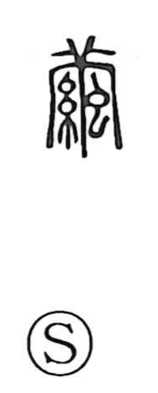

繭

Uncategorized
Kun: mayu | On: ken
cocoon ・ silkworm cocoon
Explanation
This character fuses three elements—the shape of a mulberry leaf, the sign for thread, and the sign for insect—to show a silkworm perched on the mulberry leaf as it extrudes silk and forms its cocoon. It is therefore a purposeful compound rather than a simple picture. Oracle-bone and other early inscriptions record the cult of the silkworm deity (蚕示), and even present pictorial forms with silkworms on mulberry leaves. In the Zhou period this reverence took ceremonial shape in the queen’s sericulture rite, in which she purified herself and attended the weaving hall by the river.